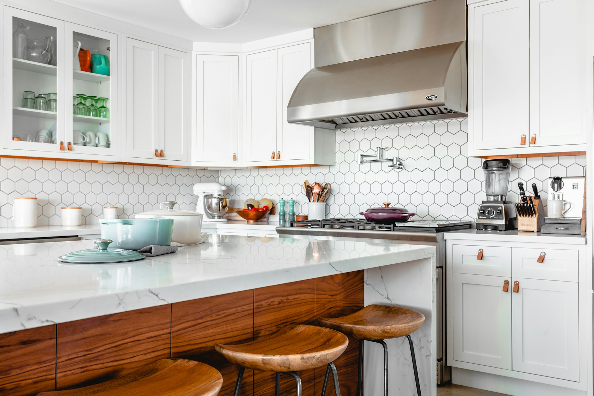
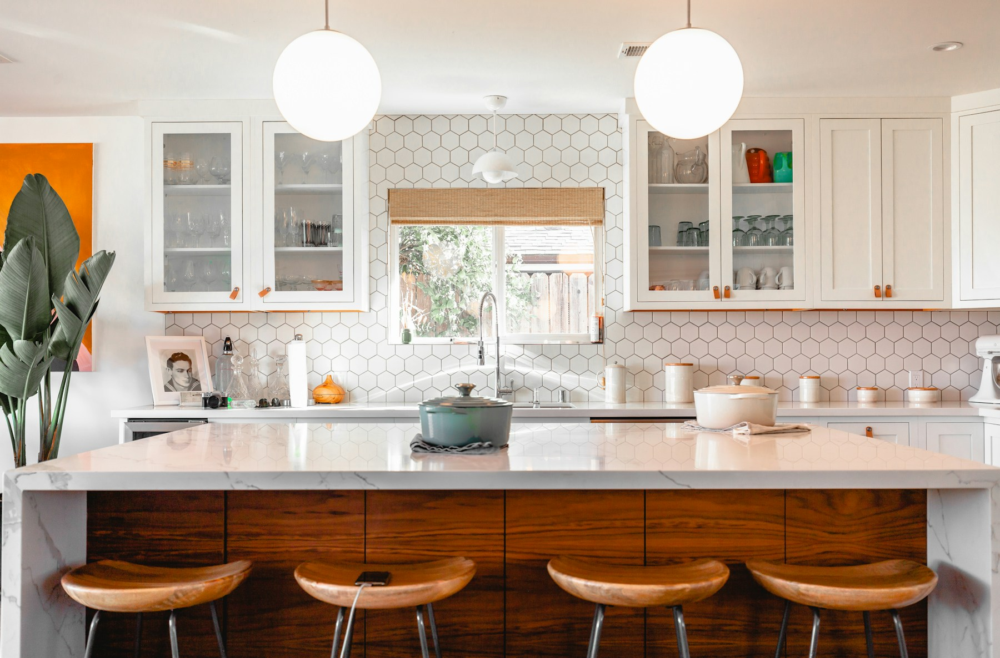
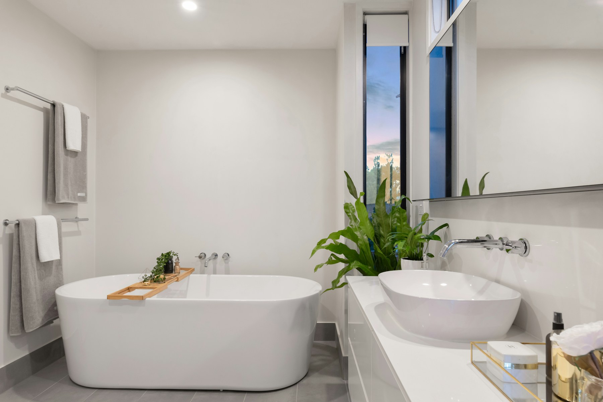

01
Spaces for everyday living
Home, kitchen, and bathroom remodeling. Bring your ideas for a room that works better and feels more like home.
Home remodeling · Kitchens · Bathrooms

HOME REMODELING · HOUSTON, TEXAS
Make your home feel more like you.
Remodeling, tile, wood, and stone installation for homes across Houston and surrounding areas.
WHAT WE CAN HELP WITH
From a single detail to a room reimagined, explore the possibilities for your home.

Home, kitchen, and bathroom remodeling. Bring your ideas for a room that works better and feels more like home.
Home remodeling · Kitchens · Bathrooms

From a shower to a kitchen backsplash, thoughtful material choices can bring a whole room together.
Tile installation · Showers · Backsplashes · Natural stone

Hardwood flooring, wood trim, and stair work to add warmth and connect the spaces in your home.
Hardwood installation · Wood trim · Stair work
IDEAS TO MAKE YOUR OWN
A little inspiration: these sample photos show ideas and materials, not completed Sasa Remodeling projects.
YOUR NEXT CHAPTER
Let’s talk about your space, your ideas, and where to begin.